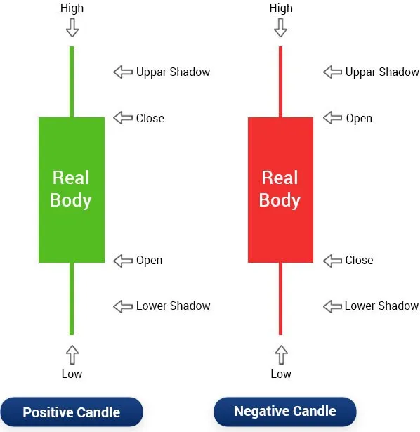

Japanese candlesticks are formed using the open, high, low and close of the chosen time frame.

-If the close is above the open, we can say that the candlestick is bullish
which means that the market is rising in this period of time. Bullish
candlesticks are always displayed as white candlestick.
The most trading platform use white color to refer to bullish
candlesticks. But the color doesn’t matter, you can use whatever color
you want.
The most important is the open price and the close price.
-If the close is below the open, we can say that the candlestick is
bearish which indicates that the market is falling in this session.
Bearish candles are always displayed as black candlesticks. But this is
not a rule.
You can find different colors used to differentiate between bullish
and bearish candlesticks.
-The filled part of the candlestick is called the real body.
-The thin lines poking above and below the body are called shadows.
-The top of the upper shadow is the high
-The bottom of the lower shadow is the low.
Long bodies refer to strong buying or selling pressure, if there is a
candlestick in which the close is above the open with a long body, this
indicates that buyers are stronger and they are taking control of the
market during this period of time.
Conversely, if there is a bearish candlestick in which the open is above
the close with a long body, this means that the selling pressure
controls the market during this chosen time frame.
-Short and small bodies indicate a little buying or selling activity.
The upper and lower shadows give us important information about the
trading session.
-Upper shadows signify the session high
-Lower shadows signify the session low
Candlesticks with long shadows show that trading action occurred well
past the open and close.
Japanese candlesticks with short shadows indicate that most of the
trading action was confined near the open and close.
-If a candlestick has a longer upper shadow, and short lower shadow,
this means that buyers flexed their muscles and bid price higher.
But for one reason or another, sellers came in and drove price back
down to end the session back near its open price.
-If a Japanese candlestick has a long lower shadow and short upper
shadow, this means that sellers flashed their washboard abs and
forced price lower. But for one reason or another buyer came in and
drove prices back up to end the session back near its’ open price.